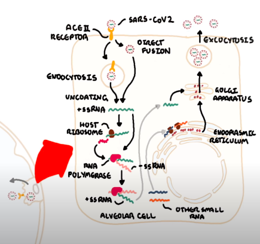

SARS-CoV-2 virus primarily affects the respiratory system. When it enters the body, the spike proteins of the virus attaches the ACE2 receptors in the lungs, specifically, Type II alveolar cells. The virus generally enters the cell via endocytosis, which is the direct fusion of its envelope into the host membrane. The virus is then uncoated and the genome enters the cell cytoplasm.
SARS-CoV-2 has a single stranded RNA, which attaches the host ribosome. The ribosome translates the RNA into proteins that will make RNA polymerase. The RNA polymerase will read the positive RNA strand to make a negative RNA strand. The negative strand will be used by the same RNA polymerase to make a positive RNA strand and other small positive RNA strands. These strands will be read by host ribosomes within the ER, to make the structural components of the virus. The ER transfer the accessory and structural proteins into the Golgi apparatus, which packages these components with positive RNA strand to form a new viruses. These viruses are then released from the cell via exocytosis.

Beyond self-replicating in alveolar cells, SARS-CoV-2 also damages them. This initiates the inflammatory response, releasing interferons, cytokines, and Damage-associated molecular patterns (DAMPs).
Interferons cause nearby cells to heighten their antiviral defenses. Alveolar macrophages detect cell injury and respond to the cytokines released by the injured alvelor cells and causes the macrophages to secrete a a variety of inflammatory cytokines, such as interleukins (TNF-a, IL1, IL6, IL8) and chemokines. This inflammatory process stimulates nerve endings that causes the dry cough common in COVID-19 patients.
TNF-a and IL1 increase vascular permeability and the increase in expression of adhesion molecules. As a result, neutrophils and monocytes bind to the adhesion proteins and enter the site of injury. IL 8 will recruit neutrophils and chemokines attract monocytes. The increased vascular permeability causes leakage of fluid that results in interstitial and pulmonary edema. The pulmonary edema leads to shortess of breath and low oxygen levels in the blood (hypoxemia).
The increase in macrophages and neutrophils in the blood lead to increase in white blood cell count. Neutrophils, while acutely beneficial by engulfing virus, they release toxic byproducts that further damage the alveolar cells, leading to less surfactant produced. This will contribute more impaired oxygenation. The white blood cells and damaged endothelial cells release inflammatory mediators like leukotrienes, which leads to hypoxemia, and prostagladins (along with TNF-a, IL1, and IL6) that leads to fever.
Decreased oxygen levels in the blood will stimulate chemoreceptors which tells the lungs to breathe more and tells the heart to pump faster, leading to tachypnoea and tachycardia.
Macrophages engulf the virus and present the virus, especially the spike proteins, on its surface. T cells will recognize the virus and create an adaptive immune response, consisting of B cells which produce antibodies against the spike proteins.
COVID-19 causes acute respiratory distress symdrome (ARDS) consisting of injured lungs, accumulation of fluid, ventilation/perfusion mismatch, and hypoxemia. ARDS is the leading cause of death in COVID-19.